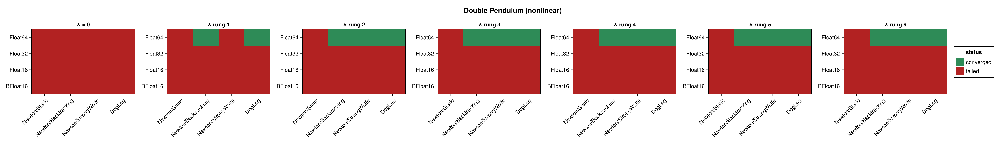
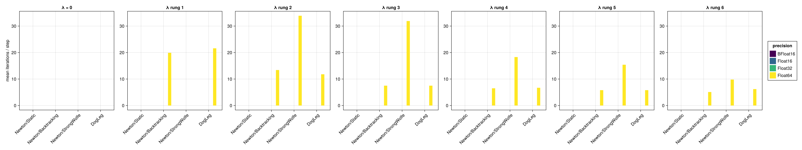
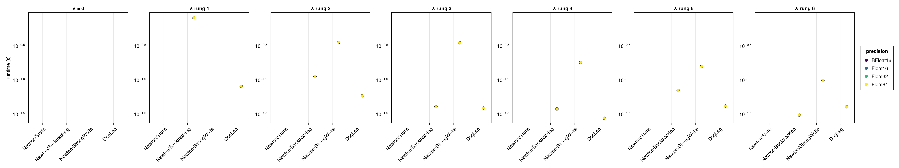
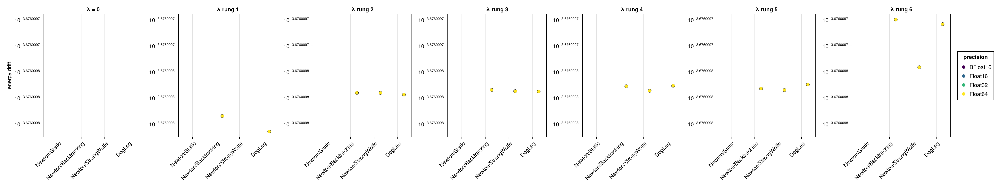
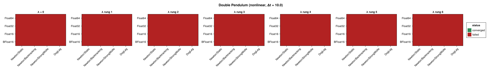

Double Pendulum (Nonlinear Integrator)
The double pendulum benchmarked with the NonLinear_OneLayer_GML integrator (see Harmonic Oscillator (Nonlinear Integrator) for the network setup and the regularization sweep). It is built as a two-dimensional lodeproblem; being chaotic and strongly nonlinear, it is a demanding test for the implicit network solve. Its Hamiltonian depends on both q and p, so the energy drift is evaluated from the full state. No closed-form solution exists.
The figures panel by the regularization factor $\lambda$ — a rung of the $\sqrt{\varepsilon(T)}$ ladder, so one panel is a different shift at each precision; solver configurations are on the x-axis and precisions are distinguished by colour. Results are shown at $\Delta t = 0.1$ and repeated for $\Delta t = 1.0$ and $\Delta t = 10.0$ (ten steps each).
using SolverBenchmark
spec = double_pendulum_lode_spec(timespan = (0.0, 1.0), timestep = 0.1)
df = cached_sweep("nonlinear_double_pendulum_dt0.1") do
run_nonlinear_benchmark(spec; timing = :quick, max_iterations = 100,
verbose = false, quiet = true)
endConvergence
plot_convergence(df; panelcol = :regularization, title = "Double Pendulum (nonlinear)")
Nonlinear iterations
plot_iterations(df; panelcol = :regularization)
Run time
plot_runtime(df; panelcol = :regularization)
Energy drift
plot_energy_drift(df; panelcol = :regularization)
Discussion
- Regularization is again decisive, and again flat across the ladder: at
Float64,BacktrackingandStrongWolfeconverge at every one of the six rungs and at none of them for $\lambda = 0$, taking $\approx 15$ iterations per step with an energy drift of $2.11 \times 10^{-4}$ that is identical to three significant figures at every rung.DogLeg(a trust-region method) is the most robust here — it is the only configuration that makes progress even at $\lambda = 0$, andNewton/Staticconverges nowhere at any rung. That is the clearest ordering of the four solver configurations anywhere in the study. - The chaotic dynamics give a larger energy drift than the integrable examples, and the achievable step size is smaller — at $\Delta t = 1.0$ and above the solve struggles.
- Only
Float64converges at all (19/28).Float32,Float16andBFloat16fail at every rung, and scaling $\lambda$ to the precision does not change that: the exception is raised in the OGA initial guess's Gram solve, which runs before the Newton iterationregularization_factoracts on — see Harmonic Oscillator (Nonlinear Integrator).
Results table
markdown_table(summary_table(df; panelcol = :regularization))| precision | solver_label | regularization | converged | iterations_mean | runtime_s | max_residual | at_tolerance | energy_drift |
|---|---|---|---|---|---|---|---|---|
| BFloat16 | Newton/Static | λ = 0 | ✗ | — | — | — | ✗ | — |
| BFloat16 | Newton/Static | λ rung 1 | ✗ | — | — | — | ✗ | — |
| BFloat16 | Newton/Static | λ rung 2 | ✗ | — | — | — | ✗ | — |
| BFloat16 | Newton/Static | λ rung 3 | ✗ | — | — | — | ✗ | — |
| BFloat16 | Newton/Static | λ rung 4 | ✗ | — | — | — | ✗ | — |
| BFloat16 | Newton/Static | λ rung 5 | ✗ | — | — | — | ✗ | — |
| BFloat16 | Newton/Static | λ rung 6 | ✗ | — | — | — | ✗ | — |
| BFloat16 | Newton/Backtracking | λ = 0 | ✗ | — | — | — | ✗ | — |
| BFloat16 | Newton/Backtracking | λ rung 1 | ✗ | — | — | — | ✗ | — |
| BFloat16 | Newton/Backtracking | λ rung 2 | ✗ | — | — | — | ✗ | — |
| BFloat16 | Newton/Backtracking | λ rung 3 | ✗ | — | — | — | ✗ | — |
| BFloat16 | Newton/Backtracking | λ rung 4 | ✗ | — | — | — | ✗ | — |
| BFloat16 | Newton/Backtracking | λ rung 5 | ✗ | — | — | — | ✗ | — |
| BFloat16 | Newton/Backtracking | λ rung 6 | ✗ | — | — | — | ✗ | — |
| BFloat16 | Newton/StrongWolfe | λ = 0 | ✗ | — | — | — | ✗ | — |
| BFloat16 | Newton/StrongWolfe | λ rung 1 | ✗ | — | — | — | ✗ | — |
| BFloat16 | Newton/StrongWolfe | λ rung 2 | ✗ | — | — | — | ✗ | — |
| BFloat16 | Newton/StrongWolfe | λ rung 3 | ✗ | — | — | — | ✗ | — |
| BFloat16 | Newton/StrongWolfe | λ rung 4 | ✗ | — | — | — | ✗ | — |
| BFloat16 | Newton/StrongWolfe | λ rung 5 | ✗ | — | — | — | ✗ | — |
| BFloat16 | Newton/StrongWolfe | λ rung 6 | ✗ | — | — | — | ✗ | — |
| BFloat16 | DogLeg | λ = 0 | ✗ | — | — | — | ✗ | — |
| BFloat16 | DogLeg | λ rung 1 | ✗ | — | — | — | ✗ | — |
| BFloat16 | DogLeg | λ rung 2 | ✗ | — | — | — | ✗ | — |
| BFloat16 | DogLeg | λ rung 3 | ✗ | — | — | — | ✗ | — |
| BFloat16 | DogLeg | λ rung 4 | ✗ | — | — | — | ✗ | — |
| BFloat16 | DogLeg | λ rung 5 | ✗ | — | — | — | ✗ | — |
| BFloat16 | DogLeg | λ rung 6 | ✗ | — | — | — | ✗ | — |
| Float16 | Newton/Static | λ = 0 | ✗ | — | — | — | ✗ | — |
| Float16 | Newton/Static | λ rung 1 | ✗ | — | — | — | ✗ | — |
| Float16 | Newton/Static | λ rung 2 | ✗ | — | — | — | ✗ | — |
| Float16 | Newton/Static | λ rung 3 | ✗ | — | — | — | ✗ | — |
| Float16 | Newton/Static | λ rung 4 | ✗ | — | — | — | ✗ | — |
| Float16 | Newton/Static | λ rung 5 | ✗ | — | — | — | ✗ | — |
| Float16 | Newton/Static | λ rung 6 | ✗ | — | — | — | ✗ | — |
| Float16 | Newton/Backtracking | λ = 0 | ✗ | — | — | — | ✗ | — |
| Float16 | Newton/Backtracking | λ rung 1 | ✗ | — | — | — | ✗ | — |
| Float16 | Newton/Backtracking | λ rung 2 | ✗ | — | — | — | ✗ | — |
| Float16 | Newton/Backtracking | λ rung 3 | ✗ | — | — | — | ✗ | — |
| Float16 | Newton/Backtracking | λ rung 4 | ✗ | — | — | — | ✗ | — |
| Float16 | Newton/Backtracking | λ rung 5 | ✗ | — | — | — | ✗ | — |
| Float16 | Newton/Backtracking | λ rung 6 | ✗ | — | — | — | ✗ | — |
| Float16 | Newton/StrongWolfe | λ = 0 | ✗ | — | — | — | ✗ | — |
| Float16 | Newton/StrongWolfe | λ rung 1 | ✗ | — | — | — | ✗ | — |
| Float16 | Newton/StrongWolfe | λ rung 2 | ✗ | — | — | — | ✗ | — |
| Float16 | Newton/StrongWolfe | λ rung 3 | ✗ | — | — | — | ✗ | — |
| Float16 | Newton/StrongWolfe | λ rung 4 | ✗ | — | — | — | ✗ | — |
| Float16 | Newton/StrongWolfe | λ rung 5 | ✗ | — | — | — | ✗ | — |
| Float16 | Newton/StrongWolfe | λ rung 6 | ✗ | — | — | — | ✗ | — |
| Float16 | DogLeg | λ = 0 | ✗ | — | — | — | ✗ | — |
| Float16 | DogLeg | λ rung 1 | ✗ | — | — | — | ✗ | — |
| Float16 | DogLeg | λ rung 2 | ✗ | — | — | — | ✗ | — |
| Float16 | DogLeg | λ rung 3 | ✗ | — | — | — | ✗ | — |
| Float16 | DogLeg | λ rung 4 | ✗ | — | — | — | ✗ | — |
| Float16 | DogLeg | λ rung 5 | ✗ | — | — | — | ✗ | — |
| Float16 | DogLeg | λ rung 6 | ✗ | — | — | — | ✗ | — |
| Float32 | Newton/Static | λ = 0 | ✗ | — | — | — | ✗ | — |
| Float32 | Newton/Static | λ rung 1 | ✗ | — | — | — | ✗ | — |
| Float32 | Newton/Static | λ rung 2 | ✗ | — | — | — | ✗ | — |
| Float32 | Newton/Static | λ rung 3 | ✗ | — | — | — | ✗ | — |
| Float32 | Newton/Static | λ rung 4 | ✗ | — | — | — | ✗ | — |
| Float32 | Newton/Static | λ rung 5 | ✗ | — | — | — | ✗ | — |
| Float32 | Newton/Static | λ rung 6 | ✗ | — | — | — | ✗ | — |
| Float32 | Newton/Backtracking | λ = 0 | ✗ | 89.6 | 0.514 | 0.034 | ✗ | — |
| Float32 | Newton/Backtracking | λ rung 1 | ✗ | 63.1 | 0.34 | 0.0492 | ✗ | — |
| Float32 | Newton/Backtracking | λ rung 2 | ✗ | 50.9 | 0.269 | 0.0311 | ✗ | — |
| Float32 | Newton/Backtracking | λ rung 3 | ✗ | 20.5 | 0.105 | 0.0385 | ✗ | — |
| Float32 | Newton/Backtracking | λ rung 4 | ✗ | 12.5 | 0.0702 | 0.0197 | ✗ | — |
| Float32 | Newton/Backtracking | λ rung 5 | ✗ | 12.5 | 0.0718 | 0.0462 | ✗ | — |
| Float32 | Newton/Backtracking | λ rung 6 | ✗ | 7.7 | 0.0495 | 0.00458 | ✗ | — |
| Float32 | Newton/StrongWolfe | λ = 0 | ✗ | — | — | — | ✗ | — |
| Float32 | Newton/StrongWolfe | λ rung 1 | ✗ | — | — | — | ✗ | — |
| Float32 | Newton/StrongWolfe | λ rung 2 | ✗ | 23.6 | 0.266 | 63.1 | ✗ | — |
| Float32 | Newton/StrongWolfe | λ rung 3 | ✗ | 13.8 | 0.141 | 15.1 | ✗ | — |
| Float32 | Newton/StrongWolfe | λ rung 4 | ✗ | — | — | — | ✗ | — |
| Float32 | Newton/StrongWolfe | λ rung 5 | ✗ | 16.8 | 0.337 | 0.0482 | ✗ | — |
| Float32 | Newton/StrongWolfe | λ rung 6 | ✗ | 14.8 | 0.147 | 0.00557 | ✗ | — |
| Float32 | DogLeg | λ = 0 | ✗ | 14.9 | 0.0403 | 0.0386 | ✗ | — |
| Float32 | DogLeg | λ rung 1 | ✗ | 9.4 | 0.0322 | 0.0167 | ✗ | — |
| Float32 | DogLeg | λ rung 2 | ✗ | 9.9 | 0.0299 | 0.005 | ✗ | — |
| Float32 | DogLeg | λ rung 3 | ✗ | 11.7 | 0.0516 | 0.00843 | ✗ | — |
| Float32 | DogLeg | λ rung 4 | ✗ | 8.5 | 0.0278 | 0.00347 | ✗ | — |
| Float32 | DogLeg | λ rung 5 | ✗ | 7.3 | 0.0401 | 0.00276 | ✗ | — |
| Float32 | DogLeg | λ rung 6 | ✗ | 6.8 | 0.0255 | 0.00208 | ✗ | — |
| Float64 | Newton/Static | λ = 0 | ✗ | — | — | — | ✗ | — |
| Float64 | Newton/Static | λ rung 1 | ✗ | 100 | 0.259 | 2.81e-08 | ✗ | — |
| Float64 | Newton/Static | λ rung 2 | ✗ | 100 | 0.247 | 1.82e-09 | ✗ | — |
| Float64 | Newton/Static | λ rung 3 | ✗ | 100 | 0.254 | 8.4e-11 | ✗ | — |
| Float64 | Newton/Static | λ rung 4 | ✗ | 100 | 0.253 | 2.65e-11 | ✗ | — |
| Float64 | Newton/Static | λ rung 5 | ✗ | 100 | 0.281 | 6.58e-12 | ✗ | — |
| Float64 | Newton/Static | λ rung 6 | ✗ | 100 | 0.285 | 8.2e-12 | ✗ | — |
| Float64 | Newton/Backtracking | λ = 0 | ✗ | 84.5 | 0.804 | 8.28e-08 | ✗ | — |
| Float64 | Newton/Backtracking | λ rung 1 | ✓ | 19.9 | 0.821 | 2.6e-10 | ✓ | 0.000211 |
| Float64 | Newton/Backtracking | λ rung 2 | ✓ | 13.4 | 0.113 | 1.4e-11 | ✓ | 0.000211 |
| Float64 | Newton/Backtracking | λ rung 3 | ✓ | 7.5 | 0.0406 | 1.95e-12 | ✓ | 0.000211 |
| Float64 | Newton/Backtracking | λ rung 4 | ✓ | 6.5 | 0.0376 | 4.64e-12 | ✓ | 0.000211 |
| Float64 | Newton/Backtracking | λ rung 5 | ✓ | 5.8 | 0.0704 | 9.33e-13 | ✓ | 0.000211 |
| Float64 | Newton/Backtracking | λ rung 6 | ✓ | 5.1 | 0.0306 | 1.5e-12 | ✓ | 0.000211 |
| Float64 | Newton/StrongWolfe | λ = 0 | ✗ | 65 | 1.08 | 7.48 | ✗ | — |
| Float64 | Newton/StrongWolfe | λ rung 1 | ✗ | 43.1 | 0.49 | 1.06e-10 | ✗ | — |
| Float64 | Newton/StrongWolfe | λ rung 2 | ✓ | 33.9 | 0.358 | 3.14e-12 | ✓ | 0.000211 |
| Float64 | Newton/StrongWolfe | λ rung 3 | ✓ | 31.9 | 0.35 | 9.09e-13 | ✓ | 0.000211 |
| Float64 | Newton/StrongWolfe | λ rung 4 | ✓ | 18.3 | 0.181 | 5.03e-13 | ✓ | 0.000211 |
| Float64 | Newton/StrongWolfe | λ rung 5 | ✓ | 15.4 | 0.159 | 6.34e-13 | ✓ | 0.000211 |
| Float64 | Newton/StrongWolfe | λ rung 6 | ✓ | 9.8 | 0.0986 | 7.9e-13 | ✓ | 0.000211 |
| Float64 | DogLeg | λ = 0 | ✗ | 27 | 0.109 | 6.84e-09 | ✗ | — |
| Float64 | DogLeg | λ rung 1 | ✓ | 21.6 | 0.081 | 6.27e-11 | ✓ | 0.000211 |
| Float64 | DogLeg | λ rung 2 | ✓ | 11.8 | 0.0586 | 6.82e-12 | ✓ | 0.000211 |
| Float64 | DogLeg | λ rung 3 | ✓ | 7.5 | 0.0388 | 1.28e-12 | ✓ | 0.000211 |
| Float64 | DogLeg | λ rung 4 | ✓ | 6.7 | 0.0276 | 1.15e-12 | ✓ | 0.000211 |
| Float64 | DogLeg | λ rung 5 | ✓ | 5.8 | 0.0415 | 1.05e-12 | ✓ | 0.000211 |
| Float64 | DogLeg | λ rung 6 | ✓ | 6.2 | 0.0404 | 8.5e-13 | ✓ | 0.000211 |
Coarse time step (Δt = 1.0)
spec1 = double_pendulum_lode_spec(timespan = (0.0, 10.0), timestep = 1.0)
df1 = cached_sweep("nonlinear_double_pendulum_dt1.0") do
run_nonlinear_benchmark(spec1; timing = :quick, max_iterations = 100,
verbose = false, quiet = true)
endplot_convergence(df1; panelcol = :regularization, title = "Double Pendulum (nonlinear, Δt = 1.0)")markdown_table(summary_table(df1; panelcol = :regularization))| precision | solver_label | regularization | converged | iterations_mean | runtime_s | max_residual |
|---|---|---|---|---|---|---|
| BFloat16 | Newton/Static | λ = 0 | ✗ | — | — | — |
| BFloat16 | Newton/Static | λ rung 1 | ✗ | — | — | — |
| BFloat16 | Newton/Static | λ rung 2 | ✗ | — | — | — |
| BFloat16 | Newton/Static | λ rung 3 | ✗ | — | — | — |
| BFloat16 | Newton/Static | λ rung 4 | ✗ | — | — | — |
| BFloat16 | Newton/Static | λ rung 5 | ✗ | — | — | — |
| BFloat16 | Newton/Static | λ rung 6 | ✗ | — | — | — |
| BFloat16 | Newton/Backtracking | λ = 0 | ✗ | — | — | — |
| BFloat16 | Newton/Backtracking | λ rung 1 | ✗ | — | — | — |
| BFloat16 | Newton/Backtracking | λ rung 2 | ✗ | — | — | — |
| BFloat16 | Newton/Backtracking | λ rung 3 | ✗ | — | — | — |
| BFloat16 | Newton/Backtracking | λ rung 4 | ✗ | — | — | — |
| BFloat16 | Newton/Backtracking | λ rung 5 | ✗ | — | — | — |
| BFloat16 | Newton/Backtracking | λ rung 6 | ✗ | — | — | — |
| BFloat16 | Newton/StrongWolfe | λ = 0 | ✗ | — | — | — |
| BFloat16 | Newton/StrongWolfe | λ rung 1 | ✗ | — | — | — |
| BFloat16 | Newton/StrongWolfe | λ rung 2 | ✗ | — | — | — |
| BFloat16 | Newton/StrongWolfe | λ rung 3 | ✗ | — | — | — |
| BFloat16 | Newton/StrongWolfe | λ rung 4 | ✗ | — | — | — |
| BFloat16 | Newton/StrongWolfe | λ rung 5 | ✗ | — | — | — |
| BFloat16 | Newton/StrongWolfe | λ rung 6 | ✗ | — | — | — |
| BFloat16 | DogLeg | λ = 0 | ✗ | — | — | — |
| BFloat16 | DogLeg | λ rung 1 | ✗ | — | — | — |
| BFloat16 | DogLeg | λ rung 2 | ✗ | — | — | — |
| BFloat16 | DogLeg | λ rung 3 | ✗ | — | — | — |
| BFloat16 | DogLeg | λ rung 4 | ✗ | — | — | — |
| BFloat16 | DogLeg | λ rung 5 | ✗ | — | — | — |
| BFloat16 | DogLeg | λ rung 6 | ✗ | — | — | — |
| Float16 | Newton/Static | λ = 0 | ✗ | — | — | — |
| Float16 | Newton/Static | λ rung 1 | ✗ | — | — | — |
| Float16 | Newton/Static | λ rung 2 | ✗ | — | — | — |
| Float16 | Newton/Static | λ rung 3 | ✗ | — | — | — |
| Float16 | Newton/Static | λ rung 4 | ✗ | — | — | — |
| Float16 | Newton/Static | λ rung 5 | ✗ | — | — | — |
| Float16 | Newton/Static | λ rung 6 | ✗ | — | — | — |
| Float16 | Newton/Backtracking | λ = 0 | ✗ | — | — | — |
| Float16 | Newton/Backtracking | λ rung 1 | ✗ | — | — | — |
| Float16 | Newton/Backtracking | λ rung 2 | ✗ | — | — | — |
| Float16 | Newton/Backtracking | λ rung 3 | ✗ | — | — | — |
| Float16 | Newton/Backtracking | λ rung 4 | ✗ | — | — | — |
| Float16 | Newton/Backtracking | λ rung 5 | ✗ | — | — | — |
| Float16 | Newton/Backtracking | λ rung 6 | ✗ | — | — | — |
| Float16 | Newton/StrongWolfe | λ = 0 | ✗ | — | — | — |
| Float16 | Newton/StrongWolfe | λ rung 1 | ✗ | — | — | — |
| Float16 | Newton/StrongWolfe | λ rung 2 | ✗ | — | — | — |
| Float16 | Newton/StrongWolfe | λ rung 3 | ✗ | — | — | — |
| Float16 | Newton/StrongWolfe | λ rung 4 | ✗ | — | — | — |
| Float16 | Newton/StrongWolfe | λ rung 5 | ✗ | — | — | — |
| Float16 | Newton/StrongWolfe | λ rung 6 | ✗ | — | — | — |
| Float16 | DogLeg | λ = 0 | ✗ | — | — | — |
| Float16 | DogLeg | λ rung 1 | ✗ | — | — | — |
| Float16 | DogLeg | λ rung 2 | ✗ | — | — | — |
| Float16 | DogLeg | λ rung 3 | ✗ | — | — | — |
| Float16 | DogLeg | λ rung 4 | ✗ | — | — | — |
| Float16 | DogLeg | λ rung 5 | ✗ | — | — | — |
| Float16 | DogLeg | λ rung 6 | ✗ | — | — | — |
| Float32 | Newton/Static | λ = 0 | ✗ | — | — | — |
| Float32 | Newton/Static | λ rung 1 | ✗ | — | — | — |
| Float32 | Newton/Static | λ rung 2 | ✗ | — | — | — |
| Float32 | Newton/Static | λ rung 3 | ✗ | — | — | — |
| Float32 | Newton/Static | λ rung 4 | ✗ | — | — | — |
| Float32 | Newton/Static | λ rung 5 | ✗ | — | — | — |
| Float32 | Newton/Static | λ rung 6 | ✗ | — | — | — |
| Float32 | Newton/Backtracking | λ = 0 | ✗ | — | — | — |
| Float32 | Newton/Backtracking | λ rung 1 | ✗ | 100 | 0.604 | 1.3 |
| Float32 | Newton/Backtracking | λ rung 2 | ✗ | — | — | — |
| Float32 | Newton/Backtracking | λ rung 3 | ✗ | 91.3 | 0.686 | 0.316 |
| Float32 | Newton/Backtracking | λ rung 4 | ✗ | — | — | — |
| Float32 | Newton/Backtracking | λ rung 5 | ✗ | — | — | — |
| Float32 | Newton/Backtracking | λ rung 6 | ✗ | — | — | — |
| Float32 | Newton/StrongWolfe | λ = 0 | ✗ | — | — | — |
| Float32 | Newton/StrongWolfe | λ rung 1 | ✗ | — | — | — |
| Float32 | Newton/StrongWolfe | λ rung 2 | ✗ | — | — | — |
| Float32 | Newton/StrongWolfe | λ rung 3 | ✗ | — | — | — |
| Float32 | Newton/StrongWolfe | λ rung 4 | ✗ | — | — | — |
| Float32 | Newton/StrongWolfe | λ rung 5 | ✗ | — | — | — |
| Float32 | Newton/StrongWolfe | λ rung 6 | ✗ | 22 | 0.332 | 5.68e+08 |
| Float32 | DogLeg | λ = 0 | ✗ | 56 | 0.167 | 3.56 |
| Float32 | DogLeg | λ rung 1 | ✗ | 52 | 0.202 | 8.21 |
| Float32 | DogLeg | λ rung 2 | ✗ | — | — | — |
| Float32 | DogLeg | λ rung 3 | ✗ | 46.3 | 0.15 | 13.1 |
| Float32 | DogLeg | λ rung 4 | ✗ | — | — | — |
| Float32 | DogLeg | λ rung 5 | ✗ | 39.9 | 0.128 | 3.34 |
| Float32 | DogLeg | λ rung 6 | ✗ | — | — | — |
| Float64 | Newton/Static | λ = 0 | ✗ | — | — | — |
| Float64 | Newton/Static | λ rung 1 | ✗ | — | — | — |
| Float64 | Newton/Static | λ rung 2 | ✗ | — | — | — |
| Float64 | Newton/Static | λ rung 3 | ✗ | — | — | — |
| Float64 | Newton/Static | λ rung 4 | ✗ | — | — | — |
| Float64 | Newton/Static | λ rung 5 | ✗ | — | — | — |
| Float64 | Newton/Static | λ rung 6 | ✗ | — | — | — |
| Float64 | Newton/Backtracking | λ = 0 | ✗ | — | — | — |
| Float64 | Newton/Backtracking | λ rung 1 | ✗ | — | — | — |
| Float64 | Newton/Backtracking | λ rung 2 | ✗ | — | — | — |
| Float64 | Newton/Backtracking | λ rung 3 | ✗ | — | — | — |
| Float64 | Newton/Backtracking | λ rung 4 | ✗ | — | — | — |
| Float64 | Newton/Backtracking | λ rung 5 | ✗ | — | — | — |
| Float64 | Newton/Backtracking | λ rung 6 | ✗ | — | — | — |
| Float64 | Newton/StrongWolfe | λ = 0 | ✗ | — | — | — |
| Float64 | Newton/StrongWolfe | λ rung 1 | ✗ | — | — | — |
| Float64 | Newton/StrongWolfe | λ rung 2 | ✗ | 69.2 | 0.681 | 1.61 |
| Float64 | Newton/StrongWolfe | λ rung 3 | ✗ | 71.8 | 0.681 | 318 |
| Float64 | Newton/StrongWolfe | λ rung 4 | ✗ | — | — | — |
| Float64 | Newton/StrongWolfe | λ rung 5 | ✗ | 44.5 | 0.453 | 8.54 |
| Float64 | Newton/StrongWolfe | λ rung 6 | ✗ | 31.3 | 0.336 | 1.46e+80 |
| Float64 | DogLeg | λ = 0 | ✗ | — | — | — |
| Float64 | DogLeg | λ rung 1 | ✗ | 60.7 | 0.225 | 0.849 |
| Float64 | DogLeg | λ rung 2 | ✗ | 50.4 | 0.188 | 0.877 |
| Float64 | DogLeg | λ rung 3 | ✗ | — | — | — |
| Float64 | DogLeg | λ rung 4 | ✗ | — | — | — |
| Float64 | DogLeg | λ rung 5 | ✗ | — | — | — |
| Float64 | DogLeg | λ rung 6 | ✗ | 39 | 0.111 | 6.16 |
Large time step (Δt = 10.0)
spec10 = double_pendulum_lode_spec(timespan = (0.0, 100.0), timestep = 10.0)
df10 = cached_sweep("nonlinear_double_pendulum_dt10.0") do
run_nonlinear_benchmark(spec10; timing = :quick, max_iterations = 100,
verbose = false, quiet = true)
endplot_convergence(df10; panelcol = :regularization, title = "Double Pendulum (nonlinear, Δt = 10.0)")
markdown_table(summary_table(df10; panelcol = :regularization))| precision | solver_label | regularization | converged |
|---|---|---|---|
| BFloat16 | Newton/Static | λ = 0 | ✗ |
| BFloat16 | Newton/Static | λ rung 1 | ✗ |
| BFloat16 | Newton/Static | λ rung 2 | ✗ |
| BFloat16 | Newton/Static | λ rung 3 | ✗ |
| BFloat16 | Newton/Static | λ rung 4 | ✗ |
| BFloat16 | Newton/Static | λ rung 5 | ✗ |
| BFloat16 | Newton/Static | λ rung 6 | ✗ |
| BFloat16 | Newton/Backtracking | λ = 0 | ✗ |
| BFloat16 | Newton/Backtracking | λ rung 1 | ✗ |
| BFloat16 | Newton/Backtracking | λ rung 2 | ✗ |
| BFloat16 | Newton/Backtracking | λ rung 3 | ✗ |
| BFloat16 | Newton/Backtracking | λ rung 4 | ✗ |
| BFloat16 | Newton/Backtracking | λ rung 5 | ✗ |
| BFloat16 | Newton/Backtracking | λ rung 6 | ✗ |
| BFloat16 | Newton/StrongWolfe | λ = 0 | ✗ |
| BFloat16 | Newton/StrongWolfe | λ rung 1 | ✗ |
| BFloat16 | Newton/StrongWolfe | λ rung 2 | ✗ |
| BFloat16 | Newton/StrongWolfe | λ rung 3 | ✗ |
| BFloat16 | Newton/StrongWolfe | λ rung 4 | ✗ |
| BFloat16 | Newton/StrongWolfe | λ rung 5 | ✗ |
| BFloat16 | Newton/StrongWolfe | λ rung 6 | ✗ |
| BFloat16 | DogLeg | λ = 0 | ✗ |
| BFloat16 | DogLeg | λ rung 1 | ✗ |
| BFloat16 | DogLeg | λ rung 2 | ✗ |
| BFloat16 | DogLeg | λ rung 3 | ✗ |
| BFloat16 | DogLeg | λ rung 4 | ✗ |
| BFloat16 | DogLeg | λ rung 5 | ✗ |
| BFloat16 | DogLeg | λ rung 6 | ✗ |
| Float16 | Newton/Static | λ = 0 | ✗ |
| Float16 | Newton/Static | λ rung 1 | ✗ |
| Float16 | Newton/Static | λ rung 2 | ✗ |
| Float16 | Newton/Static | λ rung 3 | ✗ |
| Float16 | Newton/Static | λ rung 4 | ✗ |
| Float16 | Newton/Static | λ rung 5 | ✗ |
| Float16 | Newton/Static | λ rung 6 | ✗ |
| Float16 | Newton/Backtracking | λ = 0 | ✗ |
| Float16 | Newton/Backtracking | λ rung 1 | ✗ |
| Float16 | Newton/Backtracking | λ rung 2 | ✗ |
| Float16 | Newton/Backtracking | λ rung 3 | ✗ |
| Float16 | Newton/Backtracking | λ rung 4 | ✗ |
| Float16 | Newton/Backtracking | λ rung 5 | ✗ |
| Float16 | Newton/Backtracking | λ rung 6 | ✗ |
| Float16 | Newton/StrongWolfe | λ = 0 | ✗ |
| Float16 | Newton/StrongWolfe | λ rung 1 | ✗ |
| Float16 | Newton/StrongWolfe | λ rung 2 | ✗ |
| Float16 | Newton/StrongWolfe | λ rung 3 | ✗ |
| Float16 | Newton/StrongWolfe | λ rung 4 | ✗ |
| Float16 | Newton/StrongWolfe | λ rung 5 | ✗ |
| Float16 | Newton/StrongWolfe | λ rung 6 | ✗ |
| Float16 | DogLeg | λ = 0 | ✗ |
| Float16 | DogLeg | λ rung 1 | ✗ |
| Float16 | DogLeg | λ rung 2 | ✗ |
| Float16 | DogLeg | λ rung 3 | ✗ |
| Float16 | DogLeg | λ rung 4 | ✗ |
| Float16 | DogLeg | λ rung 5 | ✗ |
| Float16 | DogLeg | λ rung 6 | ✗ |
| Float32 | Newton/Static | λ = 0 | ✗ |
| Float32 | Newton/Static | λ rung 1 | ✗ |
| Float32 | Newton/Static | λ rung 2 | ✗ |
| Float32 | Newton/Static | λ rung 3 | ✗ |
| Float32 | Newton/Static | λ rung 4 | ✗ |
| Float32 | Newton/Static | λ rung 5 | ✗ |
| Float32 | Newton/Static | λ rung 6 | ✗ |
| Float32 | Newton/Backtracking | λ = 0 | ✗ |
| Float32 | Newton/Backtracking | λ rung 1 | ✗ |
| Float32 | Newton/Backtracking | λ rung 2 | ✗ |
| Float32 | Newton/Backtracking | λ rung 3 | ✗ |
| Float32 | Newton/Backtracking | λ rung 4 | ✗ |
| Float32 | Newton/Backtracking | λ rung 5 | ✗ |
| Float32 | Newton/Backtracking | λ rung 6 | ✗ |
| Float32 | Newton/StrongWolfe | λ = 0 | ✗ |
| Float32 | Newton/StrongWolfe | λ rung 1 | ✗ |
| Float32 | Newton/StrongWolfe | λ rung 2 | ✗ |
| Float32 | Newton/StrongWolfe | λ rung 3 | ✗ |
| Float32 | Newton/StrongWolfe | λ rung 4 | ✗ |
| Float32 | Newton/StrongWolfe | λ rung 5 | ✗ |
| Float32 | Newton/StrongWolfe | λ rung 6 | ✗ |
| Float32 | DogLeg | λ = 0 | ✗ |
| Float32 | DogLeg | λ rung 1 | ✗ |
| Float32 | DogLeg | λ rung 2 | ✗ |
| Float32 | DogLeg | λ rung 3 | ✗ |
| Float32 | DogLeg | λ rung 4 | ✗ |
| Float32 | DogLeg | λ rung 5 | ✗ |
| Float32 | DogLeg | λ rung 6 | ✗ |
| Float64 | Newton/Static | λ = 0 | ✗ |
| Float64 | Newton/Static | λ rung 1 | ✗ |
| Float64 | Newton/Static | λ rung 2 | ✗ |
| Float64 | Newton/Static | λ rung 3 | ✗ |
| Float64 | Newton/Static | λ rung 4 | ✗ |
| Float64 | Newton/Static | λ rung 5 | ✗ |
| Float64 | Newton/Static | λ rung 6 | ✗ |
| Float64 | Newton/Backtracking | λ = 0 | ✗ |
| Float64 | Newton/Backtracking | λ rung 1 | ✗ |
| Float64 | Newton/Backtracking | λ rung 2 | ✗ |
| Float64 | Newton/Backtracking | λ rung 3 | ✗ |
| Float64 | Newton/Backtracking | λ rung 4 | ✗ |
| Float64 | Newton/Backtracking | λ rung 5 | ✗ |
| Float64 | Newton/Backtracking | λ rung 6 | ✗ |
| Float64 | Newton/StrongWolfe | λ = 0 | ✗ |
| Float64 | Newton/StrongWolfe | λ rung 1 | ✗ |
| Float64 | Newton/StrongWolfe | λ rung 2 | ✗ |
| Float64 | Newton/StrongWolfe | λ rung 3 | ✗ |
| Float64 | Newton/StrongWolfe | λ rung 4 | ✗ |
| Float64 | Newton/StrongWolfe | λ rung 5 | ✗ |
| Float64 | Newton/StrongWolfe | λ rung 6 | ✗ |
| Float64 | DogLeg | λ = 0 | ✗ |
| Float64 | DogLeg | λ rung 1 | ✗ |
| Float64 | DogLeg | λ rung 2 | ✗ |
| Float64 | DogLeg | λ rung 3 | ✗ |
| Float64 | DogLeg | λ rung 4 | ✗ |
| Float64 | DogLeg | λ rung 5 | ✗ |
| Float64 | DogLeg | λ rung 6 | ✗ |